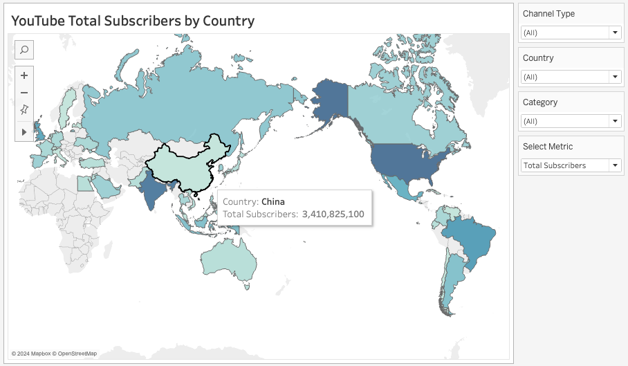

YouTube Channel Analysis.
Five visualizations exploring the global YouTube creator landscape — from subscriber counts and monthly earnings to geographic distribution, upload activity and the relationships between engagement metrics.
These visualizations were built in Tableau. Interactive versions will be embedded here via Tableau Public shortly. Static previews are shown below.
Top 10 Channels by Monthly Earnings
Entertainment channels ranked by estimated monthly revenue.

Top 10 YouTubers by Subscribers
The most subscribed channels globally and what drives their reach.

Uploads, Views & Subscriptions
Exploring the relationship between upload frequency, view counts and subscriber growth.

YouTube Country Analysis
Total subscriber distribution mapped across countries worldwide.

Top 10 Countries with YouTube Channels
Which countries produce the most top-ranked YouTube creators.

Revenue concentration
Monthly earnings vary significantly across top channels — entertainment categories dominate the highest revenue brackets, reflecting advertiser demand and audience size.
Scale of reach
The top channels command subscriber counts that dwarf traditional media audiences, with music and entertainment channels consistently leading globally.
Uploads vs views tradeoff
Upload frequency does not linearly predict view counts — some of the highest-viewed channels upload significantly less than their peers, suggesting content quality over volume.
Creator concentration
The US, India and Brazil account for a disproportionate share of top-ranked channels, reflecting both market size and platform penetration in those regions.
Dataset & methodology
The analysis uses the Global YouTube Statistics dataset sourced from Kaggle, containing performance data across subscriber counts, video views, earnings estimates, upload history, geographic information and channel classifications. Data was cleaned and preprocessed before visualization in Tableau.
View dataset on Kaggle →